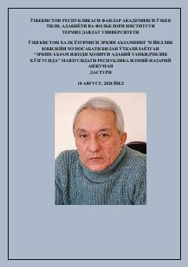

EAErkin Aʼzam ijodiga bagʻishlangan ilmiy-nazariy anjuman dasturi.
Mazkur toʻplam Oʻzbekiston xalq yozuvchisi Erkin Aʼzamning 70 yillik yubileyiga bagʻishlangan respublika ilmiy-nazariy anjumani dasturini oʻz ichiga oladi. Unda adib ijodining oʻziga xos xususiyatlari, qissachilikdagi izlanishlari va asarlari tahliliga bagʻishlangan shoʻba yigʻilishlari va maʼruza mavzulari keltirilgan.